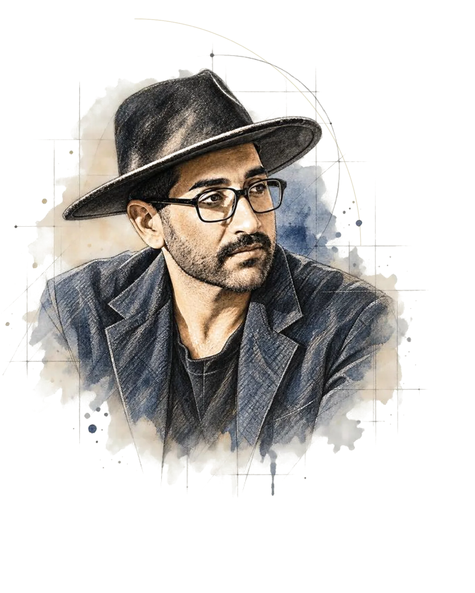
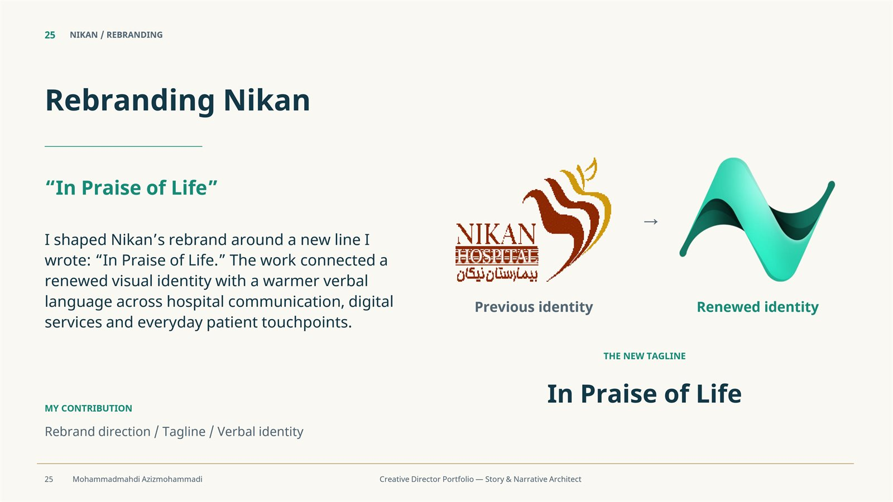
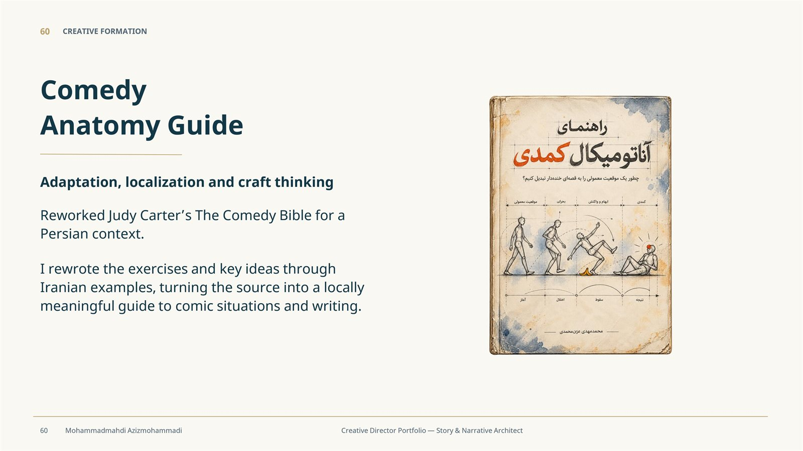
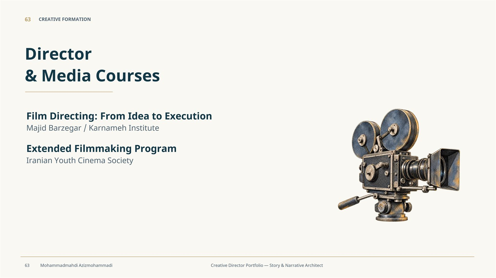

Business & Growth
صورتبندی مسئله، اولویتهای رشد، GTM thinking و وصلکردن مارکتینگ به تصمیمهای کسبوکار.
رشد کسبوکار، شناخت انسان، استراتژی برند و تجربه مشتری.
«مارکتینگ را از مسئلهٔ کسبوکار و رفتار آدمها شروع میکنم؛ بعد محصول، برند، تجربه و خلاقیت را دور همان مسئله میچینم.»

اول میفهمم واقعاً چه چیزی باید تغییر کند؛ رفتار مشتری، جایگاه برند، رشد محصول، تجربه یا فروش. بعد محصول، برند، محتوا، تجربه مشتری و خلاقیت را دور همان مسئله همراستا میکنم.
صورتبندی مسئله، اولویتهای رشد، GTM thinking و وصلکردن مارکتینگ به تصمیمهای کسبوکار.
Positioning، ارتباط محصول، adoption، acquisition و lifecycle؛ جایی که محصول باید برای آدمها معنا پیدا کند.
جایگاهیابی، معماری پیام، IMC، محتوا و کمپین؛ ساختن برندی که هم متمایز باشد هم به رفتار واقعی وصل شود.
Journey، loyalty، CRM thinking و طراحی نقاط تماس؛ از اولین برخورد تا ماندگاری و بازگشت مشتری.
ایده، روایت، تیم خلاق و تجربه؛ خلاقیت برای من ابزار حل مسئله است، نه یک خروجی تزئینی.
اینها قرار نیست کیساستادیهای تازه باشند؛ یک نمای فشردهاند از نقشهایی که نشان میدهند تجربهام فقط در Brand و CX خلاصه نمیشود.
برای من مارکتینگ مجموعهای از کانالها نیست. یک سیستم تصمیمگیری است که باید مسئلهٔ کسبوکار، رفتار آدمها، جایگاه برند و تجربه را به هم وصل کند. خلاقیت آخر این زنجیره نیست؛ وقتی درست استفاده شود، به همهٔ آنها جان میدهد.
واقعاً چه چیزی باید تغییر کند؟ رشد، فروش، adoption، retention، جایگاه یا تجربه؟
آدمها چه میخواهند، از چه میترسند و کجا حرف و رفتارشان با هم فرق دارد؟
کجا بازی کنیم، برای چه کسی، با چه وعدهای و با چه اولویتهایی؟
محصول، پیام، محتوا، CX و خلاقیت چطور باید در یک جهت کار کنند؟
اینجا خلاقیت هدف نیست؛ ابزار حل مسئله است. هر کیس از یک مسئلهٔ کسبوکار یا رفتار مشتری شروع میشود و به استراتژی، اجرا و تجربه میرسد.

۰۴از بازطراحی برند تا تجربه بیمار و رشد اکوسیستم دیجیتال.
«در ستایش زندگی» فقط یک شعار نبود؛ از ۹ پلتفرم دیجیتال و هویت کلامی تا loyalty، تجربه بیمار و نقاط تماس انسانی، نیکان یک پروژهٔ کاملِ مارکتینگ، برند و CX بود.
 ۰۳
۰۳
از احساس و محصول تا acquisition و engagement.
از ارتباط محصول و کمپین تا رشد کاربر، مشارکت و خرید؛ بامَن جایی بود که Product Marketing، رفتار مشتری و روایت به هم رسیدند.
 ۰۲
۰۲
اعتماد را از دل فرهنگ خودرو، محتوا و تجربه ساختیم.
از محتوای فرهنگ خودرو و کمپین پیکان تا سادهکردن شواهد کارشناسی و بازطراحی سفر مشتری؛ هدف، ساختن اعتماد در یک تصمیم پراضطراب بود.
 ۰۱
۰۱
افتتاح فروشگاه را به تجربهای برای توقف، تعامل و فروش تبدیل کردیم.
نوستراژاموس، QR، فال زیبایی و جایزه، همه بخشی از یک مسیر بودند: گرفتن توجه رهگذر و رساندنش به داخل فروشگاه.
 ۰۵
۰۵
از ابزار فروش به جامعه و هویت حرفهای نمایندگان.
باهمیم، ترانه، قدردانی و روایت تازهٔ نقش نماینده؛ برای نزدیککردن شبکه فروش به برند و ساختن حسِ همتیمی بودن.
 ۰۶
۰۶
بازی وقتی ارزش دارد که رفتار واقعی بسازد.
طراحی مکانیکهایی برای engagement، عادت و مشارکت؛ بدون اینکه تجربه به امتیاز و مدالِ تزئینی تقلیل پیدا کند.
 ۰۷
۰۷
ساختن یک دوست، نه یک کاراکتر تزئینی.
سامفی یک IP کودک بود که قصه، محصول و گفتوگوی والد و کودک را به هم وصل میکرد.
 ۰۸
۰۸
فرهنگ از آیینهای کوچک روزمره ساخته میشود.
ویتامین CC، شنونده شب و آیینهای تیمی؛ تجربههایی برای دیدهشدن، قدردانی و تحملپذیرتر شدن فشار کار.
 ۰۹
۰۹
دو سال ساختن، آزمودن و یادگرفتن.
لیمبیک آزمایش واقعی من برای پیوند رفتار مصرفکننده، علوم اعصاب، خلاقیت و واقعیت سختِ ساختن یک کسبوکار بود.
سالها کار حرفهای با شخصیت، میل، کشمکش، ریتم و توجه مخاطب به من یاد داده آدمها را «مخاطب هدف» نبینم؛ آنها آدمهاییاند که باید دلیلی برای توجه، ماندن و انتخاب داشته باشند.
«چیزی که از سینما با خودم به مارکتینگ آوردهام، فهم شخصیت، کشمکش، ریتم و قدرت یک روایت خوب در تغییر توجه و رفتار است.»


من عاشق بوی خاک بارونزده، صدای کمونچهٔ کلهر، خودکار بیک، طعم گس قهوه، نوازشهای مادرم و خندههای پدرم هستم. عاشق دوستام و دوستیهام... عاشق فیلمای خوب؛ دیوونهٔ آلفردو و سکانس آخر سینما پارادیزو، اشکای جان کافی در مسیر سبز، حرفای جان کیتینگ در انجمن شاعران مرده...
عاشق شعرای ابتهاج و اخوان و مشیری و عاشق تموم اون لحظههای نابی که مار شادی نیشت میزنه و ته دلت خالی میشه و حس میکنی خوشبختی... خیلی خوشبختی. همون لحظههایی که وقتی دارن عبور میکنن، میدونی قراره خاطره بشن و از همون لحظه، دلتنگشون میشی...
و زندگی یعنی همین لحظههای قشنگ، یعنی همین عاشقانهها...

مهندسی → محتوا → پروداکت مارکتینگ → مارکتینگ → برند و خلاقیت → تجربه مشتری → سینما. هر مرحله یک لایه به طرز فکر امروز من اضافه کرده.
از محتوا و Product Marketing تا مدیریت مارکتینگ و مشاوره؛ فهم اینکه ایده وقتی ارزش دارد که به رشد، رفتار و تصمیم کسبوکار وصل شود.
جایگاهیابی، کمپین، تجربه مشتری، loyalty و طراحی نقاط تماس؛ جایی که وعدهٔ برند باید در تجربهٔ واقعی قابل لمس شود.
فیلمنامه و اتاق نویسندگان، مدرسهٔ من برای فهم شخصیت، کشمکش، ریتم و توجه است؛ مهارتی که امروز به تصمیمهای مارکتینگم عمق میدهد.
این بخش «فهرست مدرکها» نیست؛ بخشی از مسیر فکری من است؛ از مارکتینگ و برند تا ادبیات، اسطوره، فیلمنامه و کارگردانی.

ADAPTATION / LOCALIZATIONبازنویسی و بومیسازی The Comedy Bible جودی کارتر برای فضای فارسی؛ با بازطراحی تمرینها و مثالها برای موقعیتهای کمدی ایرانی.
 TRANSLATION / ADAPTATION
TRANSLATION / ADAPTATIONترجمه و بومیسازی کتاب میری رودریگز برای کاربرد در برندهای ایرانی؛ با اضافهکردن نمونههای داخلی از جمله علیبابا و همراه اول.



مارکتینگ، برند، رشد و تجربههایی که آدمها واقعاً حس میکنند.


اگر مسئلهای در مارکتینگ، برند، رشد یا تجربه مشتری داری، چند خط بنویس؛ یا مستقیم تماس بگیر.